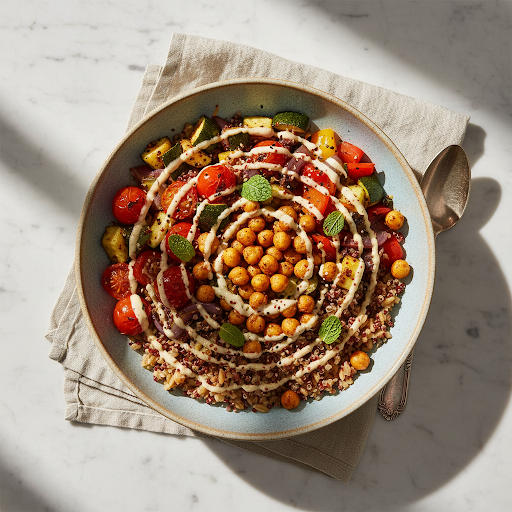
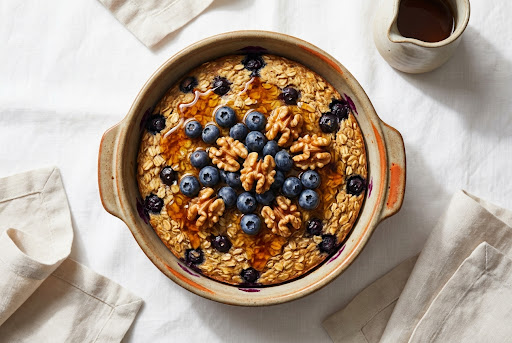
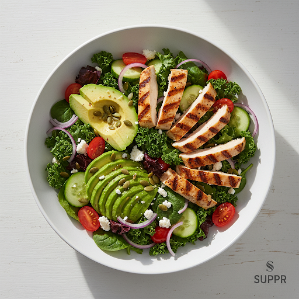
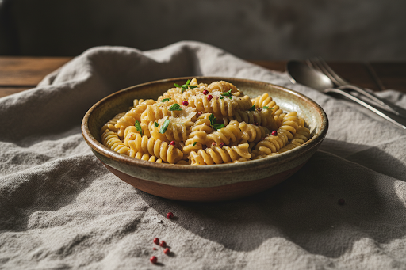

Evening, Grace
Tuesday, 24 October
140 overRemainingConsumed
2,180of 2,040 kcal
Goal2,040
Eaten2,180
Over−140
"A little over today — tomorrow's a clean slate. No guilt."
Protein
118g/ 140g
Carbs
240g/ 200g
Fat
72g/ 68g
Fibre
24g/ 30g
What to eat next

Fits your day
Dinner suggestion
Lighter Tahini Bowl
420 kcal 20 min
Today's Meals
2,180 kcal total
Breakfast Logged
Blueberry Baked Oats
420 kcal • 12g P

Lunch Logged
Chicken & Avocado Salad
620 kcal • 42g P

Dinner Logged
Three Cheese Fusilli
1,140 kcal • 38g P
Gentle nudge
One over-day won’t move the needle — your 7-day average is still right on target.